Art Appreciation
AAP101 · A.Y. 2026–2027 · 1st Semester
Instructor: Mr. Benedict C. de Jesus, LPT. (Sir Kito)
Welcome to AAP101 – Art Appreciation under Mr. Benedict de Jesus (Sir Kito)!
This learning module was created by Mr. Benedict de Jesus (Sir Kito) for his students at Bulacan State University for the 1st semester of A.Y. 2026–2027. Distribution and sharing of the link/url/screenshots/codes to people not enrolled in AAP101 under Sir Kito during the aforementioned semester is extremely prohibited and violators will face legal charges. Enrolled students, while given access rights to the course, are discouraged to take screenshots, as the interactive elements for learning the topic will be compromised.
About the Instructor

"Every human being is born with the potential to become an artist. Art Appreciation, being a humanities subject, will be one of the few things that will remain even when AI technology takes over the world."
Mr. Benedict C. de Jesus (Sir Kito) is a licensed professional English teacher who has been serving as a humble part-time instructor at Bulacan State University, teaching Art Appreciation and Communication subjects for 8 years. He is also an enthusiast of music, research, statistics, AI technology, and instructional design.
He has been a freelance Research/Thesis consultant for 16 years and a frequent guest lecturer and workshop facilitator for the City Government of Malolos. Sir Kito is also a musician with over 25 years of experience and is active in instructional design and educational development.
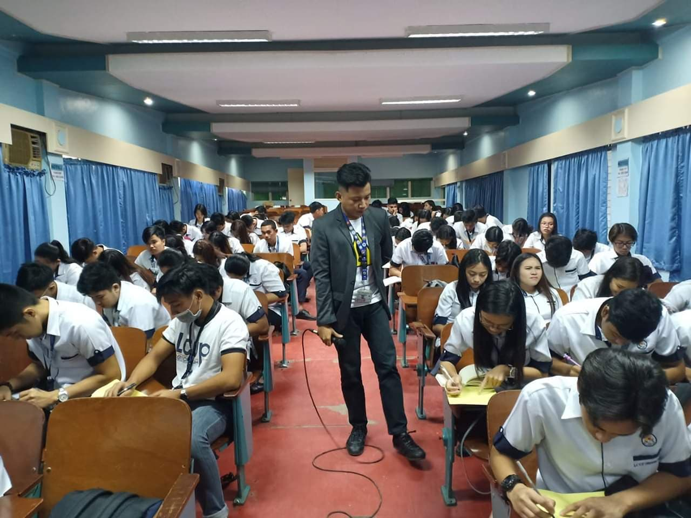
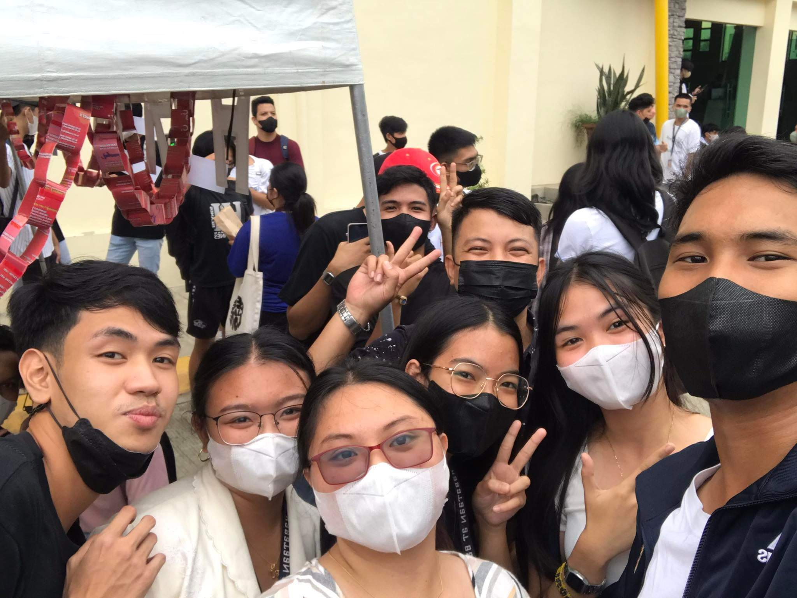
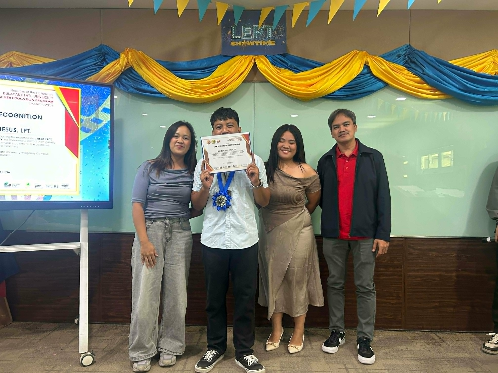
📸 Click all 4 gallery images above to continue.
Introduction to Art and Assumptions of Art
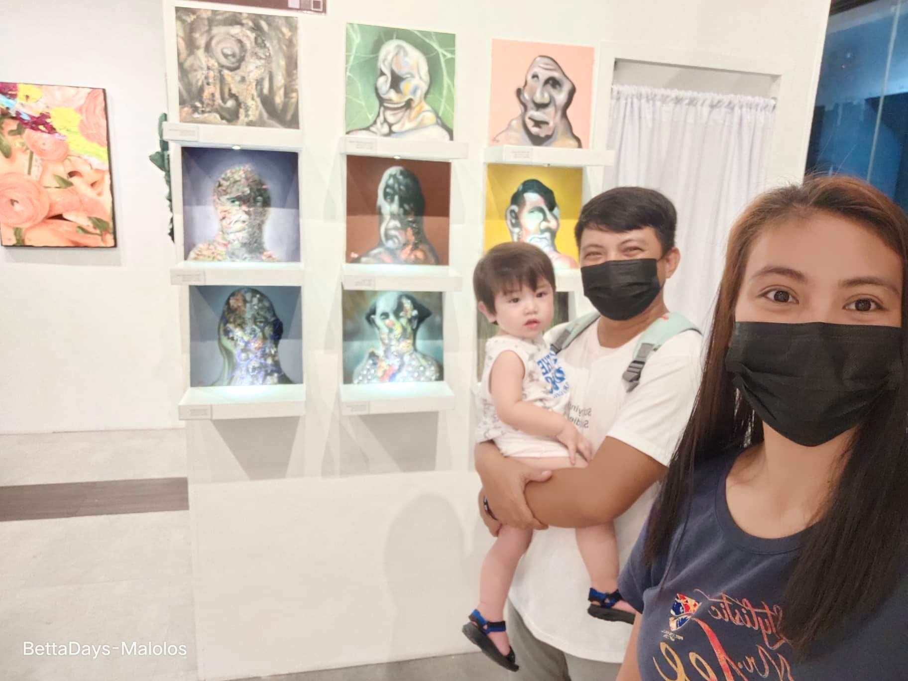
"Art is a man-made manifestation of truth, beauty, and goodness."
Imagine going to the beach on a nice, warm Saturday afternoon. You witnessed an amazing golden hour sunset. What would you immediately do? Most likely, you would take a photo. That act — capturing, preserving, transforming an experience — is the heart of art.
Art is the product of conscious human effort. People create art because we love to experience truth, beauty, and goodness over and over again. We want to preserve those experiences; hence, we transform them into something tangible — something we can keep and return to. That is what art is.
Desktop: drag & drop. Mobile: tap item to select (turns green), then tap a category box to place it.
⚠️ Complete the matching activity above to continue.
Assumptions of Art
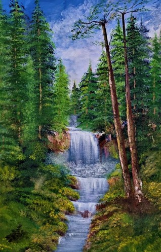
Art is not nature.
Nature is the work of God or natural processes; Art is the work of conscious human effort. A sunset is beautiful, but it is not art. A painting of that sunset, however, is art. This distinction is fundamental: art requires a deliberate, purposeful human act of creation.
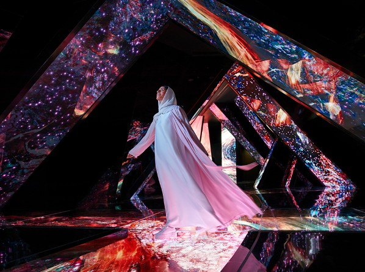
Art is experiential.
Art exists to be experienced. It engages our senses, emotions, and intellect. You don't just look at a painting — you feel it. You don't just hear music — you experience it. Without an audience to experience it, art loses a significant part of its purpose.
Art is a form of expression.
Art is one of the most powerful tools humans use to express emotions, ideas, stories, beliefs, and values. Whether it's a painting, a song, a poem, or a dance, art gives form to what we feel inside. It bridges the gap between the inner world and the outer world.
Based on the Definition and Assumptions of Art, which two (2) statements are clearly FALSE? Select them below, then click Check Answers.
⚠️ Complete all activities in this lesson to continue.
Functions of Art
Functions of Art
Personal Function
Art is created because we want to, because we love to, and because it is who we are. The personal function is intrinsic — it fulfills our inner need for expression and creativity. Examples include writing poems, personal photography, journaling, vlogging, or sketching. This function prioritizes the artist's own emotional or creative satisfaction over any external purpose.
Social Function
Art is used to form connections with other people and build communities. It brings people together, fosters shared experiences, and creates bonds. Examples include joining art groups, writing a song for someone, collaborative murals, community theater, and social movements powered by music or visual art. Art in this context is a bridge between individuals and communities.
Economic Function
Art is created to earn money or make a living. This function recognizes art as an industry and a livelihood. Examples include artisanry (crafting handmade goods for sale), commission-based art, tattoo art, fashion design, music production, architecture, and film. The creative economy is one of the fastest-growing sectors globally.
Religious Function
Art is used for worship, spiritual expression, or to strengthen faith. This is one of the oldest functions of art. Examples include church architecture, religious icons, stained glass windows, devotional music, religious artifacts (crosses, santos, ritual items), and sacred dance or performance.
Political Function
Art is used to show support or express disdain for political figures, schemes, propaganda, or ideas. Examples include election campaign jingles, political cartoons, protest songs, burning of effigies of political personalities, patriotic anthems, revolutionary posters, and documentary films exposing injustice.
Historical Function
Art is used to preserve, document, and communicate history. Before written language, humans told their stories through cave paintings and carvings. Today, art continues to record our collective memory. Examples include museums, archival photography, historical paintings, documentary films, war monuments, folk songs, and oral traditions.
Cultural Function
Art is used to promote and preserve culture, traditions, and identity. Examples include folk dances depicting regional culture (e.g., Tinikling, Singkil), indigenous crafts, regional cuisine, traditional music, festivals, and costumes that reflect ethnic heritage. It is one of the most powerful ways a community expresses who they are.
Physical Function
Art is used for physical and mental wellness. Examples include Zumba (rhythmic fitness dance), TikTok choreography (physical activity + creative expression), art therapy (used in clinical psychology to process trauma), dance therapy, and music therapy. This function recognizes the therapeutic and health-promoting aspects of artistic expression.
Aesthetic Function
Art is used to beautify ourselves, other people, or our surroundings. Examples include tattoos, piercings, body augmentation, graffiti art, interior design, landscaping, fashion, and jewelry. When art transforms an environment or person into something more beautiful, it serves an aesthetic function.
⚠️ Visit all 9 function tabs above to continue.
Artists and Artisans
Artists and Artisans
🎨 Artists
Artists focus on aesthetic and conceptual expression. They create art — such as paintings, sculptures, or music — primarily to provoke emotion, challenge ideas, or express a personal vision. The output does not need a practical, real-world utility. A painter who creates a canvas purely for beauty, emotion, or a message is an artist.
🛠️ Artisans
Artisans focus on craftsmanship and functionality. They are highly skilled manual workers who create functional, utilitarian objects — such as furniture, pottery, clothing, or bread — by hand. While their work can be beautiful, it is designed with a specific practical purpose in mind. A potter who makes clay jars for everyday use is an artisan.
Desktop: drag & drop. Mobile: tap to select, then tap a category to place.
⚠️ Complete the matching activity to continue.
Art Movements
Art Movements
Art movements are periods in art history defined by a shared style, technique, or philosophy. Understanding art movements helps you analyze and appreciate artworks with greater depth. Tap/click each card to flip it and reveal a representative artwork from that movement.
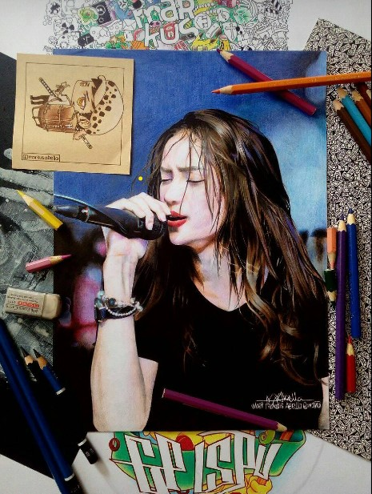
Realism
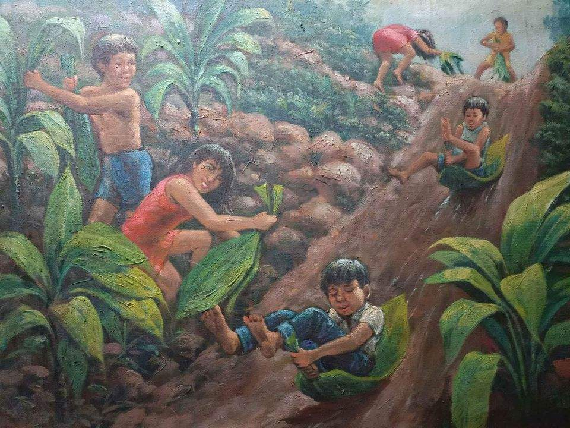
Impressionism
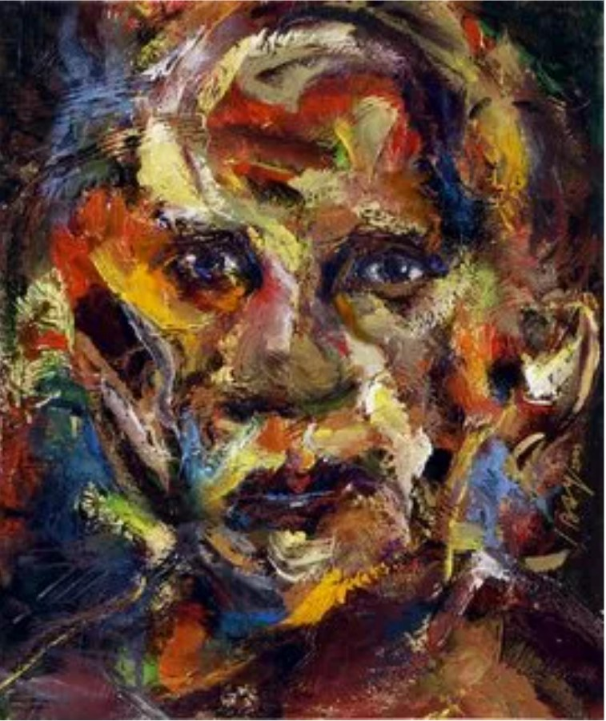
Expressionism
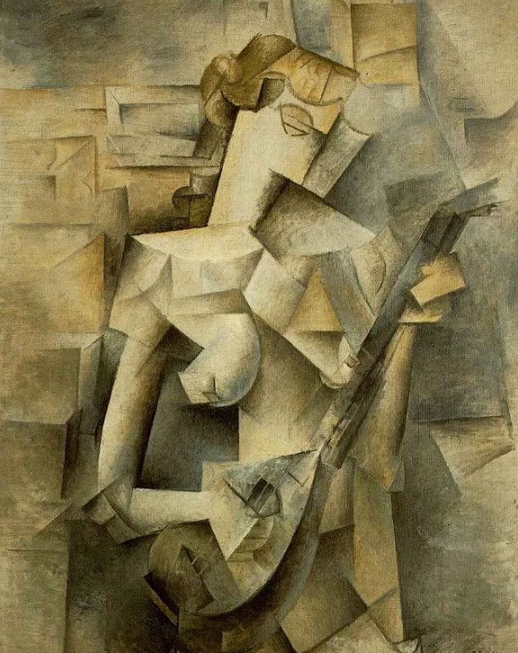
Cubism
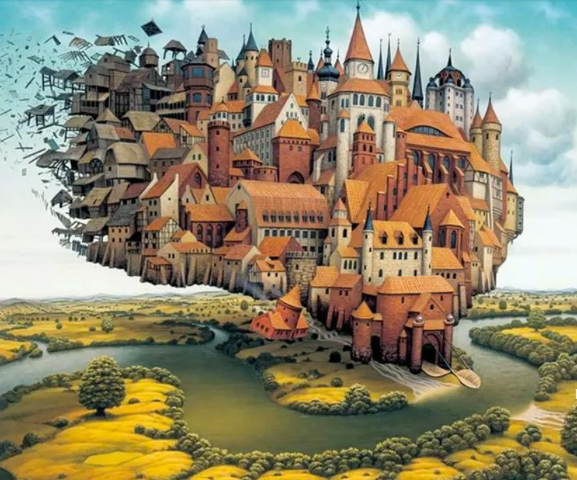
Surrealism
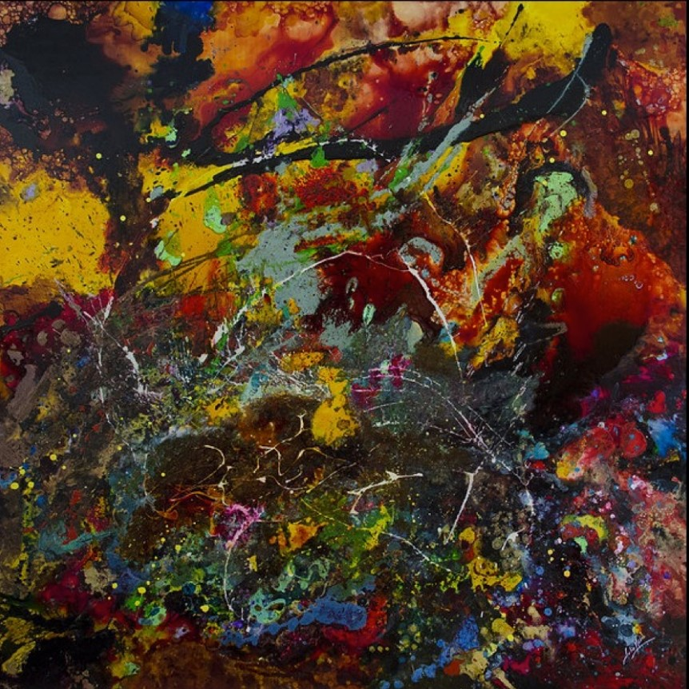
Abstract Art
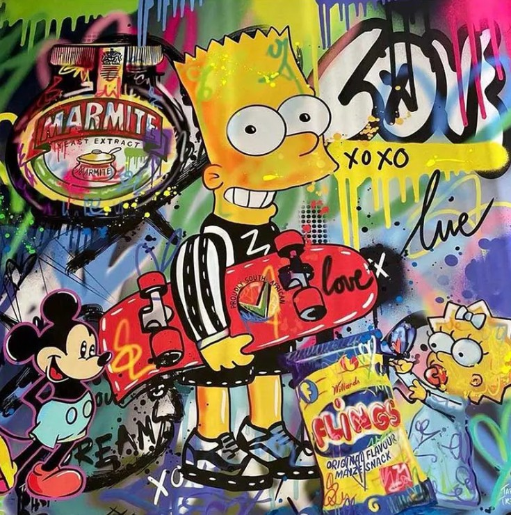
Pop Art
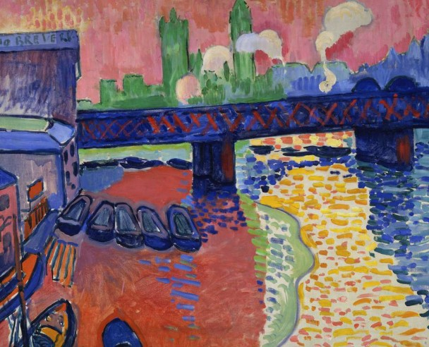
Fauvism
Which art movement would best describe the image below?
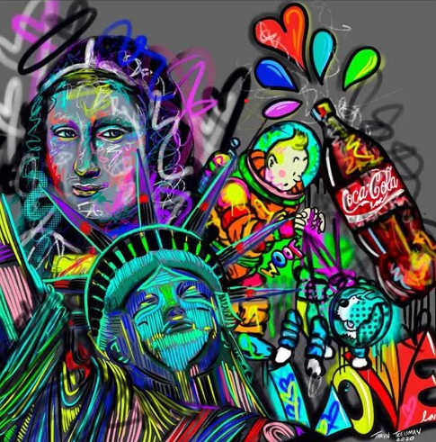
⚠️ Flip all 8 cards and answer the knowledge check to continue.
Visual Elements of Art & Midterm Project
Visual Elements of Art
Midterm Project: Coffee Painting Self-Portrait
Step 1: Gather Materials
Prepare all materials needed:
- Instant coffee or brewed coffee
- Water
- Small containers for mixing
- Paintbrushes of different sizes
- Pencil and eraser
- Thick Watercolor paper or Vellum Board
- Mixing palette or paper plate
- Tissue or paper towel
- Mirror or reference photo of yourself
Step 2: Observe and Study the Subject
Look carefully at your face using a mirror or a reference photograph. Observe your face shape, hair style, eye shape, nose and mouth proportions, and any distinctive facial features that make you uniquely you.
Step 3: Create a Light Pencil Sketch
Using a pencil, lightly sketch the basic structure of your face. Start with the head shape, eye line, nose placement, mouth placement, hair outline, and neck and shoulders. Avoid pressing too hard so pencil marks can be easily erased.
Step 4: Prepare Different Coffee Tones
Mix coffee with varying amounts of water to create different shades:
- Light mixture = light brown tones
- Medium mixture = midtones
- Concentrated mixture = dark brown/shadow tones
Test each mixture on scrap paper before applying to the artwork.
Step 5: Apply the Lightest Tones
Begin painting with the lightest coffee mixture. Paint base skin tones, light areas of the face, and background if desired. Allow each layer to dry before adding darker tones.
Step 6: Add Midtones
Using a medium-strength coffee mixture, paint areas with moderate shadows. Focus on hair details, sides of the nose, cheeks, neck, and clothing. Work carefully to maintain facial proportions and likeness.
Step 7: Add Shadows and Details
Use the darkest coffee mixture to create contrast. Enhance the eyes and eyelashes, eyebrows, hair shadows, nose contours, mouth details, and areas beneath the chin. Apply darker tones sparingly for stronger visual impact.
Step 8: Refine and Blend
Review the portrait and make adjustments. Soften harsh edges with a damp brush. Add additional layers for darker values. Improve details and texture. Allow each layer to dry completely before adding another.
Step 9: Submission
Take 2 photos of the finished portrait:
- One close-up with the reference image beside it
- One with you holding your finished work
Upload both files to your designated folder in the class GDrive.
⚠️ Navigate through all 7 Visual Elements in the carousel to complete this module.
Midterm Module Complete!
Congratulations! You've successfully completed the Midterm Learning Module for AAP101. You've covered the foundations of Art Appreciation — from the definition of art, its functions, artists vs. artisans, major art movements, and the visual elements. Good luck on your Coffee Painting Self-Portrait!
Principles of Design
Principles of Design
The Principles of Design are the rules and guidelines artists and designers use to organize visual elements into a unified, effective composition. Navigate all 9 principles below.


⚠️ Navigate through all 9 Principles of Design to continue.
Basic Photography
Basic Photography
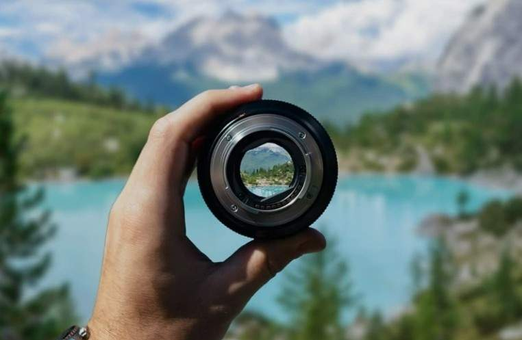
Aperture
The opening inside the lens that allows light to enter. Measured in f-stops (e.g., f/1.8, f/4, f/11).
- Wider aperture (smaller f-number, e.g., f/1.8) → More light, shallower depth of field.
- Narrower aperture (larger f-number, e.g., f/16) → Less light, greater depth of field.
Depth of Field: Wide apertures blur the background (portraits); narrow apertures keep the full scene sharp (landscapes).
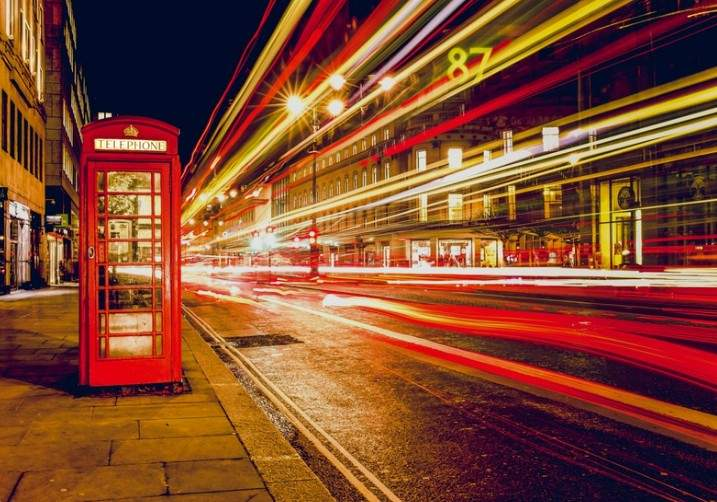
Shutter Speed
The time the camera sensor is exposed to light. Measured in fractions of a second (e.g., 1/1000s, 1/125s, 1").
- Fast shutter (e.g., 1/1000s) → Freezes motion, less light.
- Slow shutter (e.g., 1/15s or slower) → Motion blur, more light.
Use cases: Sports: 1/1000s+. Waterfalls with silky effect: 1s+.
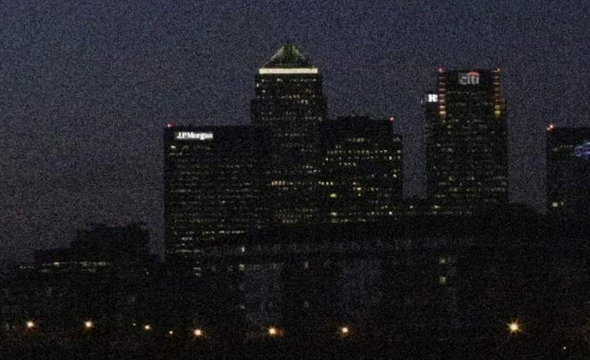
ISO
The camera sensor's sensitivity to light. Common values: ISO 100, 200, 400, 800, 1600, 3200, 6400.
- Lower ISO → Less sensitive, cleaner image, requires more light.
- Higher ISO → More sensitive, brighter image, may introduce digital noise/grain.
Use cases: Bright day: ISO 100. Indoor/low-light: ISO 800–3200+.
Sir Kito's Exposure Triangle Simulator
Exposure Settings
Objective: Capture a perfectly exposed photo of the moving train. Adjust Aperture, Shutter Speed, and ISO until the banner appears; then the Continue button will unlock.
⚠️ Visit all 3 photography tabs and achieve a perfect exposure in the Exposure Triangle simulator to continue.
Basic Videography
Basic Videography
Types of Shot
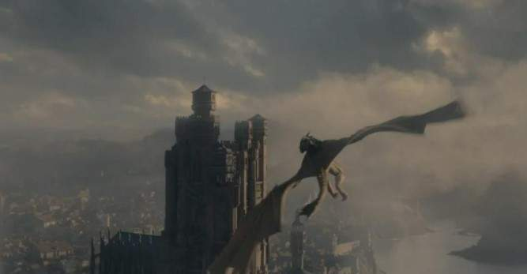
Extreme Long Shot (ELS)
Shows a very wide view of the environment, making the subject appear small. Often used to establish location and scale. Also called an Establishing Shot, it contextualizes the story setting before focusing on characters or action.
Long Shot (LS) / Wide Shot (WS)
Shows the entire subject from head to toe along with much of the surrounding environment. Provides context and setting while keeping the subject clearly visible. Both the subject and background are prominently displayed.

Full Shot (FS)
Frames the subject's entire body while keeping them more prominent in the frame than a wide shot. Shows the whole body — head to toe — but with less surrounding background, placing more emphasis on the subject and their physicality.
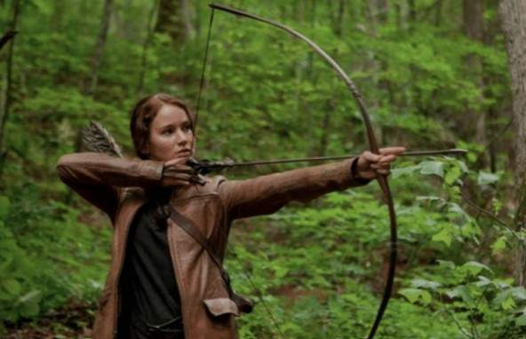
Medium Shot (MS)
Frames the subject from the waist up. Balances subject and background, ideal for conversations and interactions. One of the most commonly used shots in filmmaking and television — comfortable, natural, and versatile.

Medium Close-Up (MCU)
Frames the subject from the chest or shoulders up. Allows viewers to observe facial expressions clearly while retaining some body language. Frequently used in news broadcasts and interviews.
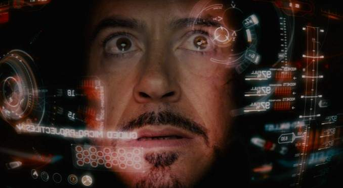
Close-Up (CU)
Focuses closely on a person's face or a specific object. Highlights emotions, details, and reactions with great intimacy. Creates an emotional connection between the viewer and the subject, drawing attention to important details.
Extreme Close-Up (ECU)
Shows a very small detail such as an eye, hand, or object. Creates emphasis, drama, or suspense. Used for maximum impact — to draw the viewer's focus to a single, highly specific detail that carries significant meaning or emotion.

Two Shot
Frames two subjects within the same shot. Commonly used during conversations to show the relationship and dynamic between two characters. Can use various framing sizes (medium, full, etc.) depending on context.
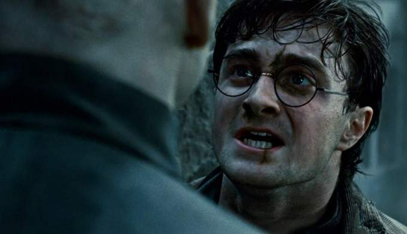
Over-the-Shoulder Shot (OTS)
Shows one subject from behind another person's shoulder. Frequently used in dialogue scenes to establish perspective and spatial relationship between two characters. The foreground shoulder anchors the viewer in space.
Point-of-View Shot (POV)
Presents the scene from a character's perspective, allowing viewers to see what the character sees. Creates immersion and empathy — it puts the audience directly in the character's shoes. Used to show what someone is looking at or to heighten tension.

Insert Shot
Focuses on a specific object or detail important to the story — such as a phone screen, clock, or key. Provides the audience with information necessary to understand the narrative, showing something the character is reading, handling, or looking at closely.

Cutaway Shot
Temporarily shifts away from the main action to show a related subject, reaction, or environmental detail. Used to add context, show reactions, compress time, or build tension. A fundamental tool of film editing used to shape pace and meaning.
Camera Angles
Eye-Level Angle
The camera is positioned at the subject's eye level. Creates a natural, neutral perspective making the viewer feel equal to the subject. The most common camera angle in everyday filmmaking — it neither elevates nor diminishes the subject.
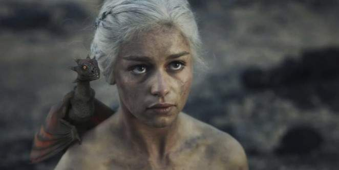
High Angle
The camera looks down on the subject from above. Can make the subject appear smaller, weaker, vulnerable, or less important. Used to show a character in a powerless situation, depict a crowd scene, or establish the relative scale of a subject in their environment.
Low Angle
The camera looks up at the subject from below. Can make the subject appear larger, stronger, more powerful, or intimidating. Used to convey authority, dominance, or heroism. Superhero films frequently use low angles when showing protagonists in action.

Bird's-Eye View (Aerial Shot)
The camera is positioned directly above the scene, looking straight down. Provides a unique, disorienting perspective and reveals spatial relationships. Often used in establishing shots, action sequences, or to create a sense of surveillance or omniscience.

Worm's-Eye View
The camera is placed very low, near the ground, looking upward. Exaggerates height and creates a dramatic, often unsettling effect. Makes everything above the camera look towering and powerful — used in action, horror, or scenes requiring extreme visual drama.
Dutch Angle (Tilted Angle)
The camera is intentionally tilted sideways. Creates a sense of tension, imbalance, confusion, or unease. Also called the "canted angle" or "oblique angle," the Dutch Angle is a stylistic choice used in thrillers, horror films, and scenes depicting psychological instability.
⚠️ View all Shot Types and Camera Angle tabs to continue.
Guitar Lessons for Beginners
Guitar Lessons for Beginners
Sir Kito's Interactive Guitar Chord Cheat Sheet
🎸 Interactive Guitar Chord Cheat Sheet
Selected Open Chords for Beginners — click a chord name to view its diagram and fingering guide
Strumming Patterns
D = Downstroke | U = Upstroke
Whole Note (4 beats): D (sustained to 4 beats)
Half Note (2 beats): D – D (each sustained to 2 beats)
Quarter Note (1 beat): D – D – D – D
Eighth Note (½ beat): DU – DU – DU – DU
Sixteenth Note (¼ beat): DUDU – DUDU – DUDU – DUDU
Same principles apply to rests — pauses in which you don't make a sound.
Which pattern most likely contains a half note?
Final Term Project: Guitar Performance Video
Instructions for the Final Term Project will be personally given by your instructor to allow room for questions and concerns. Please attend the designated class session where Sir Kito will walk you through the requirements, rubric, and submission details.
⚠️ Answer the knowledge check above to complete this module.
Final Term Module Complete!
Congratulations! You've successfully completed the Final Term Learning Module for AAP101. You've mastered the Principles of Design, the fundamentals of Photography and Videography, and explored Guitar Basics. Good luck with your Guitar Performance Video project!